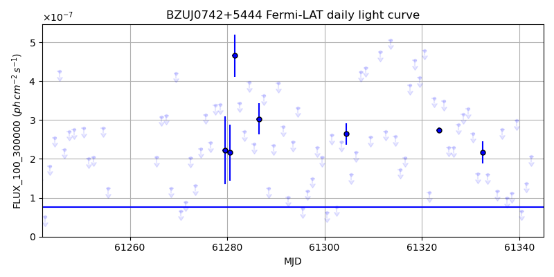
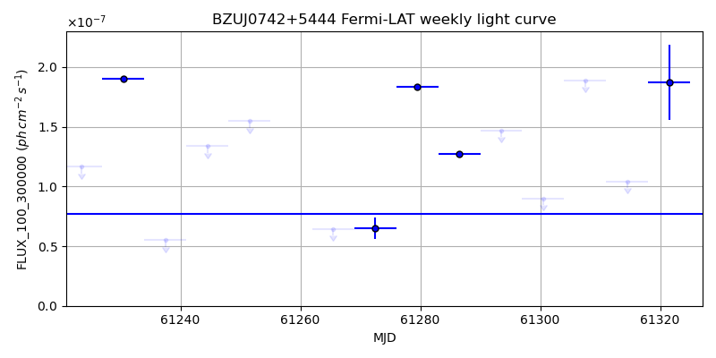
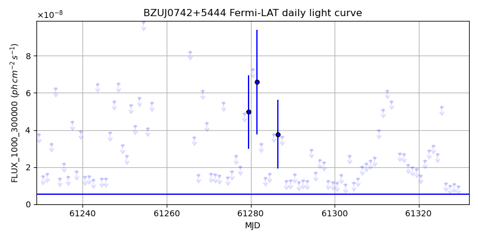
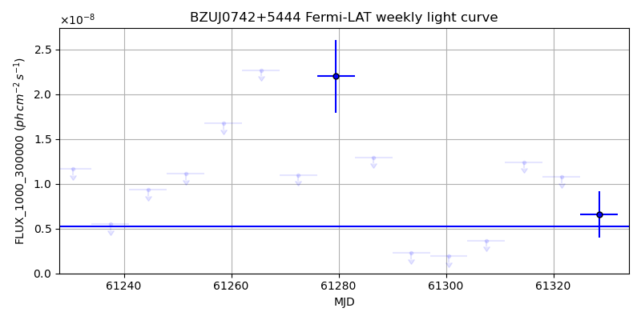

LAT Lightcurve site: https://fermi.gsfc.nasa.gov/ssc/data/access/lat/msl_lc/source/BZU_J0742p5444
NED: Query
Time of last update of this page: UT: 2026-10-24 15:19 (MJD: 61337.638)
| Property | Value |
|---|---|
| R.A. | 7:42:39.84 |
| Dec. | 54:44:24.0 |
| z | 0.720 |
| 3FGL SpectrumType | LogParabola |
| 3FGL PL Index | |
| 3FGL Flux_100_300000 | 7.70e-08 1 / (s cm2) |
| 3FGL Flux_1000_300000 | 5.28e-09 1 / (s cm2) |
| 3FGL Flux >200 GeV | 2.84e-12 1 / (s cm2) |
| 3FGL Extrap. Crab >200 GeV | 0.01 |
| 3FGL Flux After EBL Absorption >200GeV | 1.78e-13 1 / (s cm2) |
| 3FGL EBL Crab Fraction >200GeV | 0.00 |

| MJD | dMJD | Flux | dFlux | Frac3FGL | FracCrab>200GeV | EBLFracCrab>200GeV |
|---|---|---|---|---|---|---|
| 61332.50 | 0.50 | 2.17e-07 | 2.89e-08 | 2.82 | 0.03 | 0.00 |
| 61333.50 | 0.50 | 1.60e-07 | 0.00e+00 | 0.00 | 0.00 | 0.00 |
| 61334.50 | 0.50 | 5.73e-07 | 0.00e+00 | 0.00 | 0.00 | 0.00 |
| 61335.50 | 0.50 | 1.17e-07 | 0.00e+00 | 0.00 | 0.00 | 0.00 |
| 61336.50 | 0.50 | 2.75e-07 | 0.00e+00 | 0.00 | 0.00 | 0.00 |

| MJD | dMJD | Flux | dFlux | Frac3FGL | FracCrab>200GeV | EBLFracCrab>200GeV |
|---|---|---|---|---|---|---|
| 61300.50 | 3.50 | 8.99e-08 | 0.00e+00 | 0.00 | 0.00 | 0.00 |
| 61307.50 | 3.50 | 1.89e-07 | 0.00e+00 | 0.00 | 0.00 | 0.00 |
| 61314.50 | 3.50 | 1.04e-07 | 0.00e+00 | 0.00 | 0.00 | 0.00 |
| 61321.50 | 3.50 | 1.87e-07 | 3.16e-08 | 2.43 | 0.03 | 0.00 |
| 61328.50 | 3.50 | 1.23e-07 | 2.67e-08 | 1.60 | 0.02 | 0.00 |

| MJD | dMJD | Flux | dFlux | Frac3FGL | FracCrab>200GeV | EBLFracCrab>200GeV |
|---|---|---|---|---|---|---|
| 61332.50 | 0.50 | 5.93e-08 | 0.00e+00 | 0.00 | 0.00 | 0.00 |
| 61333.50 | 0.50 | 4.88e-08 | 0.00e+00 | 0.00 | 0.00 | 0.00 |
| 61334.50 | 0.50 | 2.57e-08 | 0.00e+00 | 0.00 | 0.00 | 0.00 |
| 61335.50 | 0.50 | 1.19e-08 | 0.00e+00 | 0.00 | 0.00 | 0.00 |
| 61336.50 | 0.50 | 1.17e-08 | 0.00e+00 | 0.00 | 0.00 | 0.00 |

| MJD | dMJD | Flux | dFlux | Frac3FGL | FracCrab>200GeV | EBLFracCrab>200GeV |
|---|---|---|---|---|---|---|
| 61300.50 | 3.50 | 1.94e-09 | 0.00e+00 | 0.00 | 0.00 | 0.00 |
| 61307.50 | 3.50 | 3.67e-09 | 0.00e+00 | 0.00 | 0.00 | 0.00 |
| 61314.50 | 3.50 | 1.24e-08 | 0.00e+00 | 0.00 | 0.00 | 0.00 |
| 61321.50 | 3.50 | 1.08e-08 | 0.00e+00 | 0.00 | 0.00 | 0.00 |
| 61328.50 | 3.50 | 6.59e-09 | 2.57e-09 | 1.25 | 0.02 | 0.00 |
--------------------------------------------------------- Using user-supplied coords: 7:42:39.84 54:44:24.0 2000 --------------------------------------------------------- FLWO UT night of: 2026-10-25 Local Sid. @ Midnight: 01:50 Sunset (-15.0) (local, UT): 18:49 01:49 Sunrise (-15.0) (local, UT): 05:27 12:27 Moonrise (local, UT): Moonset (local, UT): Moon phase: 0.99 --------------------------------------------------------- AzTime LSID UT Obj_el Obj_az Mn_el Mn_az Sep. --------------------------------------------------------- 18:49 20:39 01:49 -1.7 7.8 26.2 94.5 88.3 19:19 21:09 02:19 -0.9 12.0 32.4 98.6 88.1 19:49 21:39 02:49 0.3 16.1 38.6 103.2 87.8 20:19 22:09 03:19 2.1 20.0 44.7 108.4 87.6 20:49 22:39 03:49 4.3 23.6 50.6 114.6 87.4 21:19 23:09 04:19 7.0 27.0 56.2 122.3 87.2 21:49 23:39 04:49 10.1 30.1 61.2 132.2 87.0 22:19 00:09 05:19 13.4 33.0 65.5 145.3 86.8 22:49 00:39 05:49 17.0 35.5 68.4 162.2 86.6 23:19 01:10 06:19 20.8 37.7 69.4 182.2 86.4 23:49 01:40 06:49 24.8 39.5 68.2 202.0 86.2 00:19 02:10 07:19 28.9 41.0 65.1 218.6 86.0 00:49 02:40 07:49 33.1 42.1 60.8 231.3 85.8 01:19 03:10 08:19 37.5 42.7 55.7 240.9 85.6 01:49 03:40 08:49 41.8 42.8 50.1 248.5 85.4 02:19 04:10 09:19 46.1 42.1 44.3 254.6 85.2 02:49 04:40 09:49 50.4 40.7 38.2 259.8 85.0 03:19 05:10 10:19 54.4 38.3 32.1 264.4 84.8 03:49 05:40 10:49 58.2 34.5 26.0 268.5 84.6 04:19 06:10 11:19 61.6 29.0 19.9 272.4 84.4 04:49 06:40 11:49 64.4 21.6 13.8 276.2 84.1 05:19 07:11 12:19 66.2 12.2 7.8 279.9 83.9 05:27 07:18 12:27 66.5 9.5 6.2 280.9 83.8 --------------------------------------------------------- Moon up all night, no dark time. Dark hours >55 deg.: 0.00